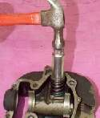

Leaking valves, worn guides and hardened valve seals cause low compression and oil smoke. This job takes the valves out of the cylinder head so the parts can be checked and the seals renewed. It is workshop level because the head must be off the engine and, if the seats need cutting, a machine shop is needed.
Safety
- Wear eye protection. Valve keepers and springs can fly out under spring force.
- Hold the head steady on a soft surface so it cannot fall.
- Keep fingers clear of the spring cap when using a compressor.
You need
- The cylinder head, removed from the engine (Assess the top end first).
- A valve spring compressor. A deep socket the same width as the spring cap and a hammer also work on many small engines.
- A caliper, a dial gauge and a small screwdriver.
- An egg carton or tray, so every part stays in its own place.
- New valve seals and a little valve stem lubricant. Check the seal type and size before buying.
Steps
- Lay the head on its side with a shop rag in the combustion chamber, so loose parts do not fall inside.
- Look at how the keepers sit around the valve stem. Fit a spring compressor over the spring cap and compress the spring just enough to free the two keepers.
- Small-engine option: stand the head with the valve ends up, put a small ball of paper in the square end of a deep socket, set the socket square on the spring cap and strike it firmly once. The keepers drop free. If this is uncomfortable, use the compressor.
- Lift off the cap and spring. Put each valve and its parts in its own place in the carton, marked intake or exhaust.
- Measure each spring's free height with a caliper. Replace any spring that is shorter than the limit in your bike's manual, and any that are shorter than the others.
- Check for a thin washer under each spring. Clean the spring seats with solvent and blow with air, so loose washers pop out. Refit them. Without one, the spring wears into the aluminium head.
- Push the valve out of the guide. Prise the old seal off the guide with a small screwdriver. If a valve sticks, it may be caught on a burr raised by the keepers. Remove the burr with a small file before pulling it through.
- Check guide play: put the valve back in and fit a dial gauge against the head of the valve, then rock it. Compare the reading with the limit in the manual. If play is over the limit, the guide needs replacing in a machine shop.
- Clean the head, ports and valves. Check each valve face and seat for pitting, burning or a thin edge. A valve with a thin, sharp edge will overheat and fail.
- Refitting: lubricate the stem and slide the valve into its guide. Fit the spring washer, then push the new seal down over the stem onto the guide with a deep socket of the right size.
- Fit the spring, cap and keepers. Compress the spring, seat both keepers in the groove, then release slowly. Tap the stem end lightly to settle the keepers.
- Pour a little solvent into each port to check for a leak past the valve (Check a valve and seat with a solvent leak test).
Check your work
- Each keeper is fully in its groove and the spring cap sits square.
- Every valve moves freely in its guide and returns under the spring.
- No solvent seeps past the valve face in the leak test.
When to go to a workshop
- Guide play over the limit, or a seat that is pitted, wide or burnt: guides and seats need reaming and cutting with machine tools. See Cut and lap a valve seat.
- A bent valve, a broken spring or a cracked head.
If it did not fix the problem
- Check the valve clearance after the head is back on: Check and adjust valve clearance.
- Test compression again: Test engine compression.